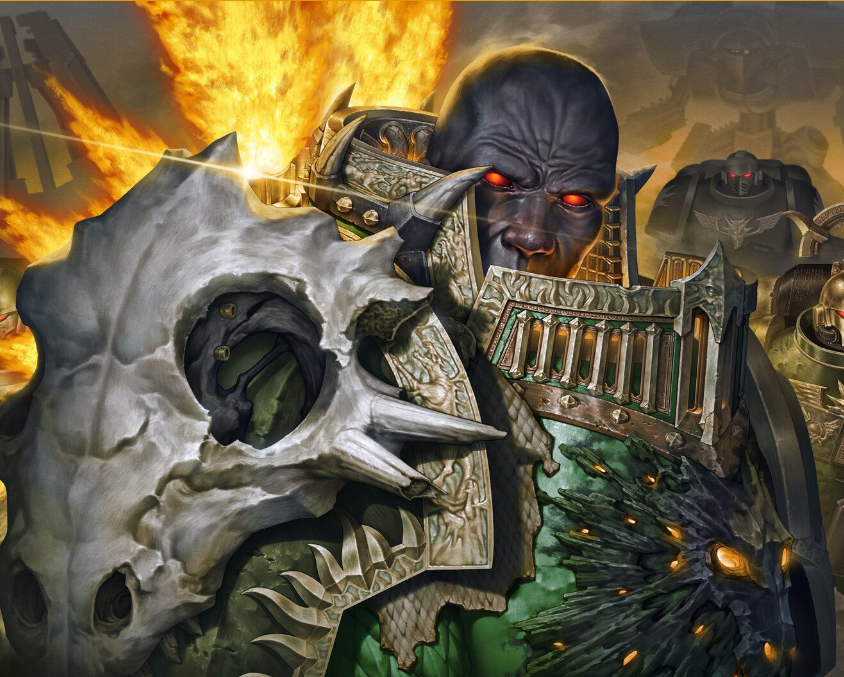

Dossier Primarque XVIIIe Légion
Vulkan fut le Primarque des Salamanders. Un géant parmi les fils de l’Empereur, forgé dans le feu de Nocturne et marqué par une humanité rare chez les seigneurs de guerre de l’Imperium.
Retrouvé sur Nocturne, monde de volcans, de cendres et de créatures monstrueuses, Vulkan apprit très tôt que survivre ne suffisait pas. Il fallait protéger ceux qui ne pouvaient pas se défendre.

LE FILS DE L’EMPEREUR
Sous son commandement, la XVIIIe Légion devint une force différente. Moins distante des populations humaines. Plus attachée à la défense des civils. Plus consciente du prix réel de la guerre.
Vulkan était aussi un maître forgeron. Il façonnait armes et reliques avec une patience presque rituelle, mêlant puissance destructrice et précision artisanale.
Durant la Grande Croisade, il servit l’Empereur avec loyauté, mais jamais avec froideur. Là où certains Primarques voyaient des mondes à soumettre, Vulkan voyait des peuples à préserver.
L’Hérésie d’Horus frappa durement les Salamanders. Sur Isstvan V, ils furent trahis, massacrés et presque brisés. Vulkan lui-même subit des souffrances que peu d’êtres auraient pu supporter.
LA GUERRE COMME DESTIN
Son endurance dépassait les limites ordinaires. Les récits les plus sensibles le décrivent comme un Perpétuel, un être capable de revenir malgré la mort. Ces affirmations restent classifiées et doivent être manipulées avec prudence.
Il faut comprendre ceci. Vulkan n’était pas seulement un guerrier puissant. Il était la preuve qu’un Primarque pouvait encore se souvenir de ceux pour qui l’Imperium prétendait combattre.
Dans une galaxie qui broie les faibles, cette compassion fut peut-être sa plus grande force.
Fin de l’extrait. Toute donnée relative au statut exact de Vulkan doit être conservée sous scellement archivistique.